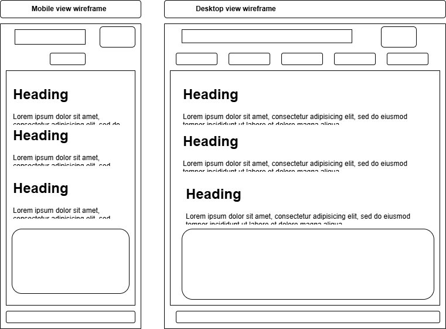
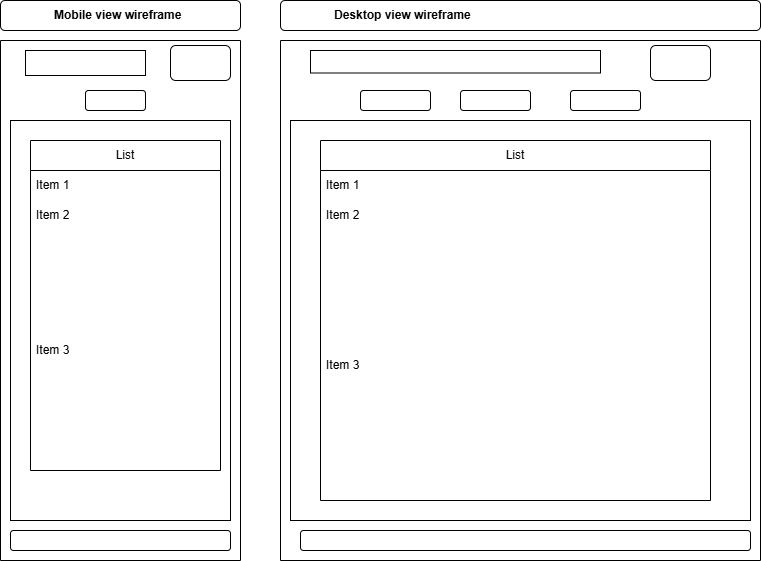
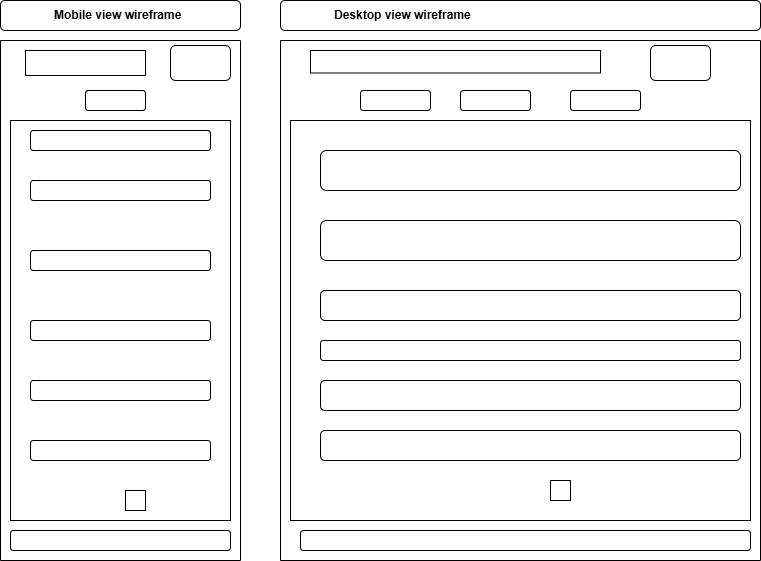

Local Herbal Remedies Collection.org
This name was selected to reflect the website's focus on collecting and showcasing local herbal remedies while attributing ownership to the developers.
The website aims to preserve and promote traditional herbal knowledge by providing a platform to collect and share remedies. It will also recognize the contributions of local developers and highlight the scientific approval status and potential royalties from pharmaceuticals.
Primary Color: Green (#4CAF50) - Used for headings and accents.
Secondary Color: Gold (#FFD700) - Used for background colors and highlights.
Font 1:Ubuntu, Arial, sans-serif - Used for headings.
Font 2:Confortaa ,Georgia, serif - Used for body text.
Design the wireframe of the home page layout.
Mobile View and Desktop View:
Design the wireframe of the remedies page layout.
Mobile View and Desktop View:
Design the wireframe of the submit page layout.
Mobile View and Desktop View:
Had electricity cuts that delayed the project